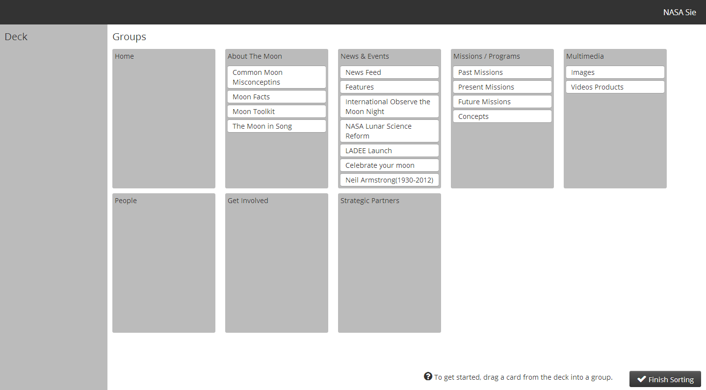

Charles Colson
- Class:
- TC 349 -
- Client-Side Web Development
Before today I knew nothing about the Card Sorting ideology. This process is useful when organizing a website that contains a lot of info that needs to be displayed. Though information can be organized in many different ways, Card Sorting allows for someone to come up with the most efficient grouping. Websites should be easy to navigate, easily finding what you are looking for. When doing this assignment I read that you wanted us to have 3 others do the Card Sort. I now see why this is important because it will enhance the usability because of the thought process of others. You must ask yourself if the structure of the navigation of the site is efficient. It seemed that my results were different from others. Others put certain cards from "News & Events" in the "About The Moon" group. Besides those small differences there were no big changes.
